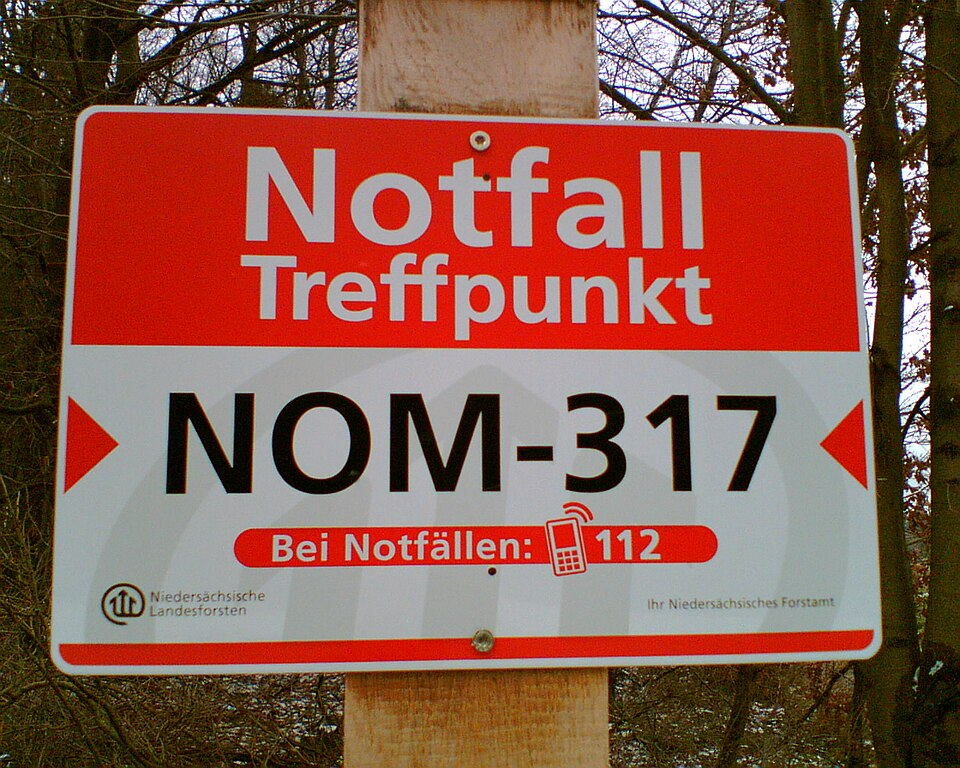

adege
adege
Good morning!
Nur das Schöne wird die Welt retten!
Fjodor Dostojewski
Nicht verzagen, Doc Alvers fragen!
Informatik — Grundkurs 11
Versagen, Katastrophen, Täuschung
Bedrohungsanalyse II: Technik fällt aus, Menschen irren — und manche werden getäuscht
Nicht verzagen, Doc Alvers fragen!
Wo wir stehen
Letzte Woche: digitale Angriffe — Schadsoftware, Phishing, DDoS
Aber: Der größte Teil aller Ausfälle hat keine böse Absicht
Heute: Katastrophen, technisches und menschliches Versagen — und Social Engineering
Leitfrage: Was schützt Daten, wenn gar kein Angreifer das Problem ist?
Nicht verzagen, Doc Alvers fragen!
Kapitel 01
Vier Arten von Bedrohung
Absicht, Technik, Mensch, Natur
Nicht verzagen, Doc Alvers fragen!
Die vollständige Bedrohungsanalyse
| Bedrohung | Beispiel |
|---|---|
| vorsätzlicher Angriff | Ransomware, Phishing, Sabotage |
| technisches Versagen | Festplatte defekt, Server überlastet |
| menschlicher Fehler | falsche Datei gelöscht, Stick verloren |
| höhere Gewalt | Feuer, Wasser, Stromausfall |
Häufigste Ursache für Datenverlust: menschliche Fehler und fehlende oder ungeprüfte Sicherungen
Spektakuläre Fälle sind seltener als banale
Nicht verzagen, Doc Alvers fragen!
Überlastung und Missbrauch
Auch ohne Angriff kann ein Dienst überlastet sein — wenn alle zur selben Minute klicken
Beispiele: Anmeldeschluss, Ticketverkauf, Zeugnistag im Schulportal
Missbrauch: Geräte und Konten für Zwecke nutzen, für die sie nicht gedacht sind
Single Point of Failure: ein Server, eine Leitung — fällt sie aus, steht alles
Nicht verzagen, Doc Alvers fragen!
Die Risikomatrix
| Schaden gering | Schaden hoch | |
|---|---|---|
| Eintritt häufig | regeln | sofort handeln |
| Eintritt selten | beobachten | vorsorgen |
Eintrittswahrscheinlichkeit und Schadenshöhe zusammen ergeben die Dringlichkeit
Selten, aber existenzbedrohend — etwa ein Brand — zählt trotzdem
So lassen sich Maßnahmen priorisieren
Nicht verzagen, Doc Alvers fragen!
Kapitel 02
Social Engineering
Der Mensch als Einfallstor
Nicht verzagen, Doc Alvers fragen!
Die Technik wird umgangen
Social Engineering: menschliches Verhalten gezielt ausnutzen, um an Informationen oder Zugänge zu kommen
Angriffspunkte: Hilfsbereitschaft, Autorität, Zeitdruck
Die Technik wird dabei umgangen, nicht überwunden
Deshalb hilft vor allem Schulung — und klare Regeln, die den Druck herausnehmen
Nicht verzagen, Doc Alvers fragen!
Drei typische Maschen
| Masche | So läuft es | richtige Reaktion |
|---|---|---|
| falscher Support | Anrufer will dringend das Passwort | nie nennen, bekannte Nummer zurückrufen |
| Phishing | Mail mit Link und Zeitdruck | Adresse selbst eingeben |
| Tailgating | jemand geht mit durch die offene Tür | Vereinzelung, klare Regeln |
Echter Support fragt nie nach dem Passwort
Beim Tailgating wird Höflichkeit zum Sicherheitsrisiko
Nicht verzagen, Doc Alvers fragen!
Checkliste für verdächtige Mails
Wer schreibt wirklich? Name und Adresse des Absenders lassen sich fälschen
Wohin führt der Link? Mit der Maus darüber zeigen — nicht klicken
Wird Druck gemacht? „Heute noch“ und „Konto gesperrt“ sind typische Druckmittel
Wird etwas verlangt, das der echte Absender nie verlangt — Passwort, TAN, Code?
Im Zweifel: die Seite über die selbst eingegebene Adresse öffnen oder zurückrufen
Nicht verzagen, Doc Alvers fragen!
Kapitel 03
Datensicherung
Kopien, die im Ernstfall da sind
Nicht verzagen, Doc Alvers fragen!
Die 3-2-1-Regel
| Zahl | Regel | schützt gegen |
|---|---|---|
| 3 | drei Kopien der Daten | den Defekt eines Geräts |
| 2 | auf zwei verschiedenen Medien | systematische Fehler eines Medientyps |
| 1 | eine Kopie außer Haus | Feuer, Wasser, Diebstahl |
Sicherung im selben Raum: Feuer oder Wasser treffen Original und Kopie zugleich
Dauerhaft verbundene Sicherung: Ransomware verschlüsselt sie mit
Nicht verzagen, Doc Alvers fragen!
Nur eine geprüfte Sicherung zählt
Erst beim Zurückspielen zeigt sich, ob eine Sicherung vollständig und lesbar ist
Typische Fehler: fehlende Dateien, falsche Rechte, unlesbare Medien
Eine nie getestete Sicherung ist nur eine Vermutung
Der Test gehört fest in den Betriebsplan
Nicht verzagen, Doc Alvers fragen!
RAID und USV — keine Sicherung
RAID
mehrere Festplatten im Verbund
Spiegelung: Fällt eine aus, übernimmt die andere
schützt gegen Hardwaredefekte
nicht gegen Löschen, Ransomware, Feuer — der Löschbefehl wird mitgespiegelt
USV
unterbrechungsfreie Stromversorgung
überbrückt einen Stromausfall für Minuten, nicht Stunden
genug für ein geordnetes Herunterfahren
ohne sie drohen beschädigte Dateisysteme
Nicht verzagen, Doc Alvers fragen!
Kapitel 04
Regeln für den Ernstfall
Organisation fängt Fehler ab

Nicht verzagen, Doc Alvers fragen!
Organisatorische Maßnahmen
| Maßnahme | Wirkung |
|---|---|
| klare Zuständigkeiten | jeder weiß, wer handelt |
| Vier-Augen-Prinzip | eine zweite Person prüft kritische Schritte mit |
| regelmäßige Schulung | macht Regeln erst wirksam |
| Zugänge beim Ausscheiden entziehen | keine verwaisten Konten als Einfallstor |
Technik verhindert keine Denkfehler — Organisation fängt sie ab
Das Vier-Augen-Prinzip schützt zugleich vor Missbrauch durch Einzelne
Nicht verzagen, Doc Alvers fragen!
Der Notfallplan
Business-Continuity-Plan: wie der Betrieb im Notfall weiterläuft
Er benennt kritische Abläufe, Ausweichwege, Zuständige und ihre Erreichbarkeit
Notfallkontakte auf Papier: Im Ernstfall fällt oft genau das System aus, in dem sie stehen
Ungeprobt ist jeder Plan nur Papier
Nicht verzagen, Doc Alvers fragen!
Melden statt verschweigen
DSGVO: meldepflichtig, wenn personenbezogene Daten betroffen sind und ein Risiko für die Betroffenen besteht
Die Frist für die Meldung an die Aufsichtsbehörde ist kurz: 72 Stunden
Nicht jeder Virenfund ist meldepflichtig — ein verschlüsselter verlorener Stick wird anders bewertet
Fehlerkultur: Wer Strafe fürchtet, meldet später oder gar nicht — und der Schaden wächst
Nicht verzagen, Doc Alvers fragen!
Die meisten Datenverluste haben keine böse Absicht — gegen sie helfen geprüfte Sicherungen nach der 3-2-1-Regel, klare Regeln und eine Kultur, in der man Fehler sofort meldet.
Merksatz
Nicht verzagen, Doc Alvers fragen!
Fun Facts
1947 fanden Techniker im Rechner Harvard Mark II eine Motte im Relais — sie klebt bis heute im Logbuch
1998 löschte bei Pixar ein versehentlicher Befehl große Teile von Toy Story 2 — die Sicherung war fehlerhaft
Gerettet hat den Film eine Kopie auf dem Heimrechner einer Mitarbeiterin
2021 brannte in Straßburg ein Rechenzentrum — wessen Sicherung im selben Gebäude lag, verlor seine Daten
Nicht verzagen, Doc Alvers fragen!
Eure Aufgabe
Szenarioanalyse mit Fallkarten: Welche Bedrohungsart — und wo in der Risikomatrix?
Rollenspiel zu dritt: Anrufer, Angerufene, Beobachter — die Angerufene gibt nichts heraus
Phishing-Beispiele mit der Checkliste prüfen: Woran erkennt ihr die Fälschung?
Passwort-Check an Beispielpasswörtern — nie das eigene Passwort in eine Website tippen
Zum Schluss: Aufgaben (20) auf der Planseite — Lösung pro Aufgabe zum Aufklappen
Nicht verzagen, Doc Alvers fragen!